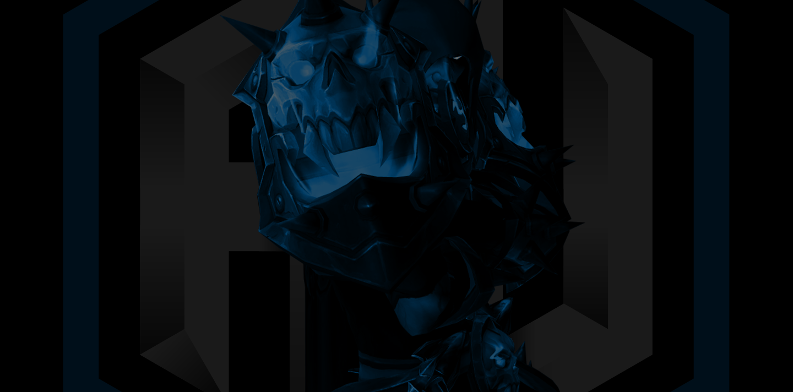
A full-scale rebrand for a growing gaming organization — built to unite their community, elevate their presence, and create a system that could grow for years to come.
The Starting Point
ARTHAX needed a fresh voice for the forward-marching future their team was building. We explored tone, symbol options, typography, and art direction to land on a mark and message that felt bold, united, and ready to lead.
It was about building a foundation for everything that would follow: branding, content, merch, and a voice the community could rally behind.
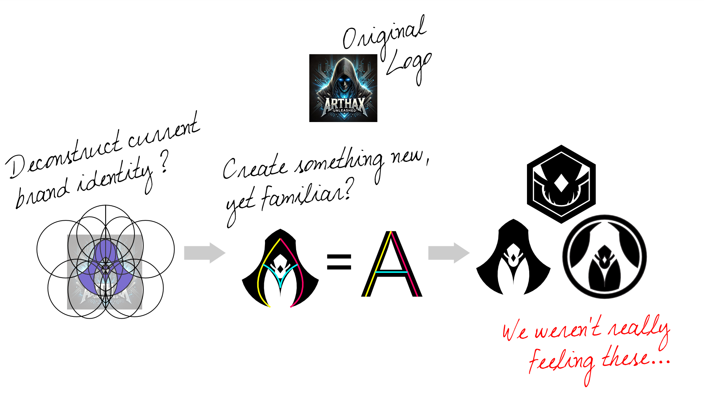
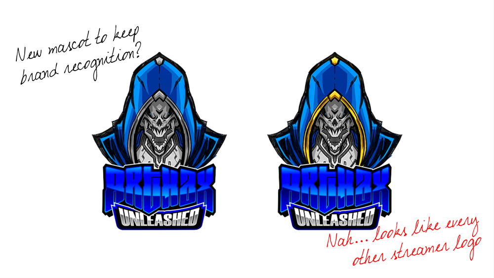
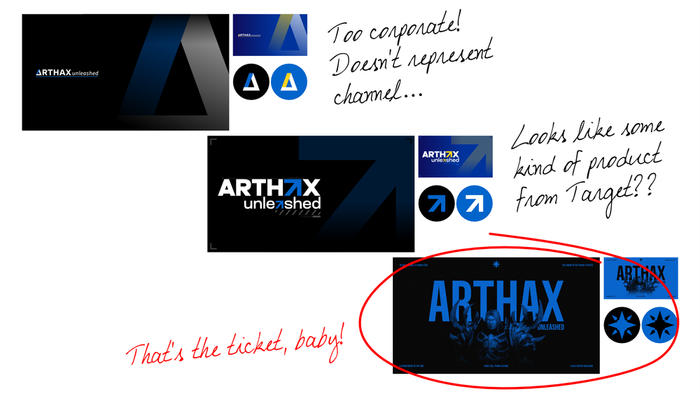
The Research
During the research phase, I dove into dark fantasy themes, studying the visual language of both games and design. The goal was to create something that felt mysterious and powerful but still clear and functional. I explored symbols, colors, and typography that could carry that weight, blending the gritty, immersive feel of RPG worlds with a design system that was practical and easy to understand. The result was a look that feels fresh yet familiar, striking a balance between fantasy storytelling and effective branding.
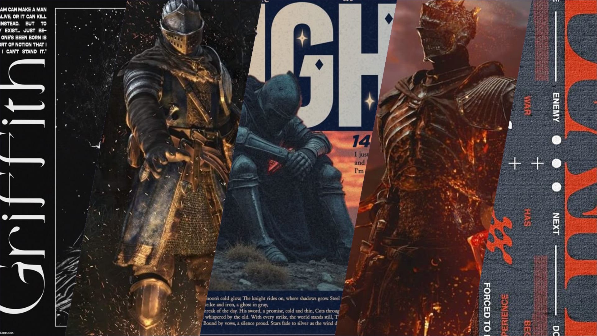
The Concepts
When developing concepts, I explored a range of ideas, from straightforward, literal designs to more abstract interpretations. I studied iconography from early medieval periods, looking for visual cues that felt authentic yet adaptable — researching symbols across different eras that align with dark fantasy themes: marks of power, protection, and identity. The goal was to find something that felt timeless, carrying the weight of old legends while still feeling bold and fresh for a modern audience.
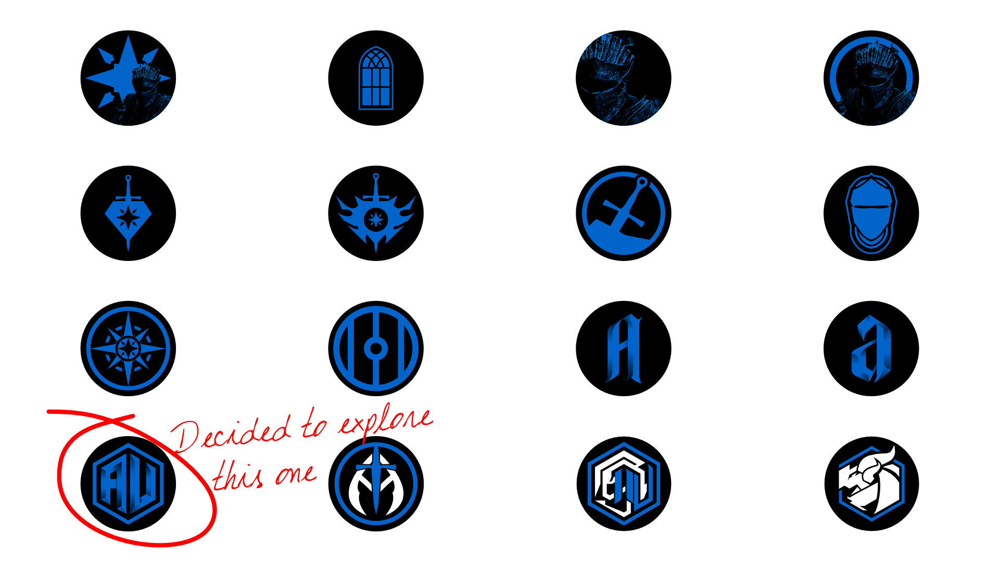
The Final Design
For the final design, we wanted the logo to be clean and simple while still reflecting the dark fantasy style. A bold Gothic font gave it impact, while the hexagonal shape from the original brand kept it familiar. To bring more of that dark fantasy language to life, we introduced supporting icons and smaller details that add depth without overcomplicating the main design.

The Brand Guide
To ensure the logo and supporting designs were always used correctly, I created a brand guide that outlines everything, from logo placement to color choices and typography. Staying true to the dark fantasy vibe, the guide itself was designed with that same tone in mind, blending clear instructions with rich, atmospheric visuals. The goal was to make it practical yet immersive — a tool that feels like an extension of the brand rather than just a set of rules.
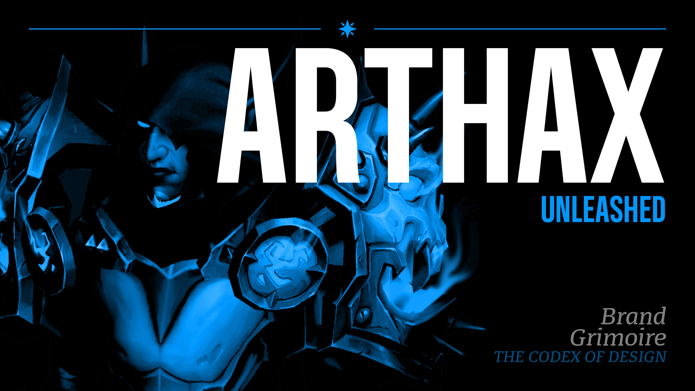
What About The Fans?
For the subscription tiers, we leaned into the dark fantasy vibe and built a system that feels like leveling up in an RPG. The longer someone stays subscribed, the better their gear becomes, just like in a game. Each tier unlocks upgraded armor, starting with basic equipment and progressing to powerful, battle-ready designs. It’s a fun way to reward loyalty while tying directly into the fantasy world ARTHAX’s audience knows and loves.
The Sketches
Before finalizing the designs, I sketched out all the subscription tiers to map out the visual language and ensure the progression felt right. I wanted each upgrade to feel exciting, like earning stronger gear in an RPG. The pacing was key — each new tier needed to feel like a clear step forward without losing momentum. Sketching everything first helped me balance those “wow” moments, making sure each design felt rewarding and impactful.
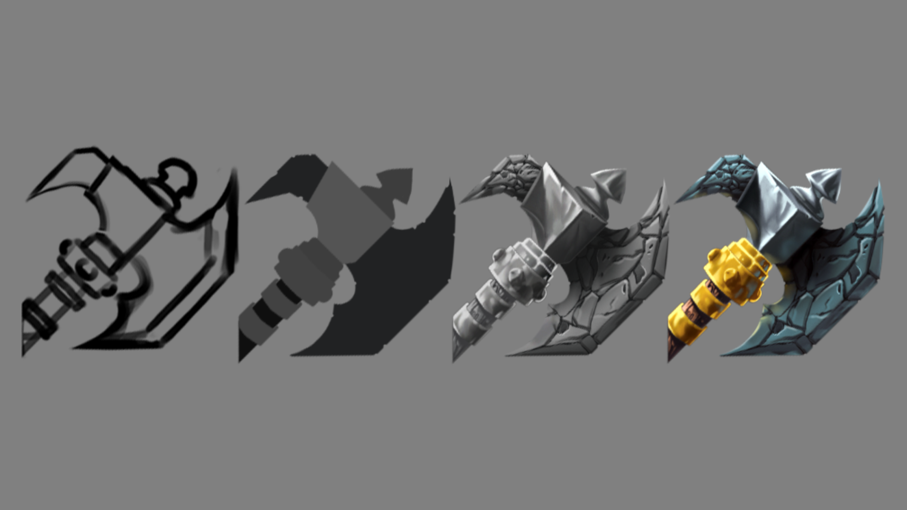
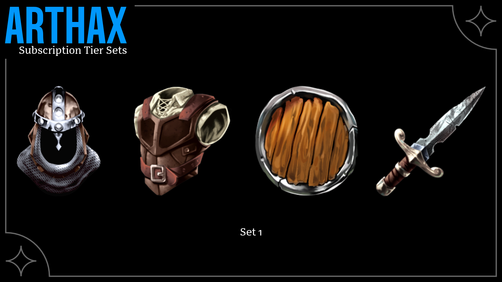
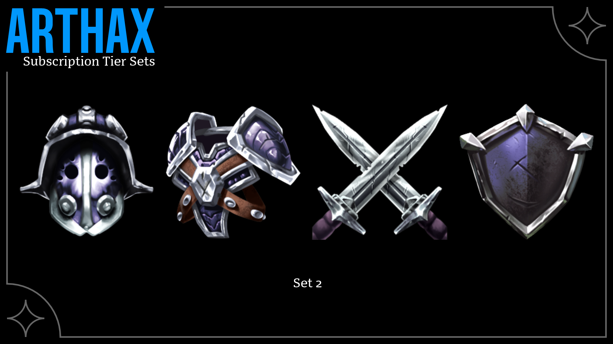
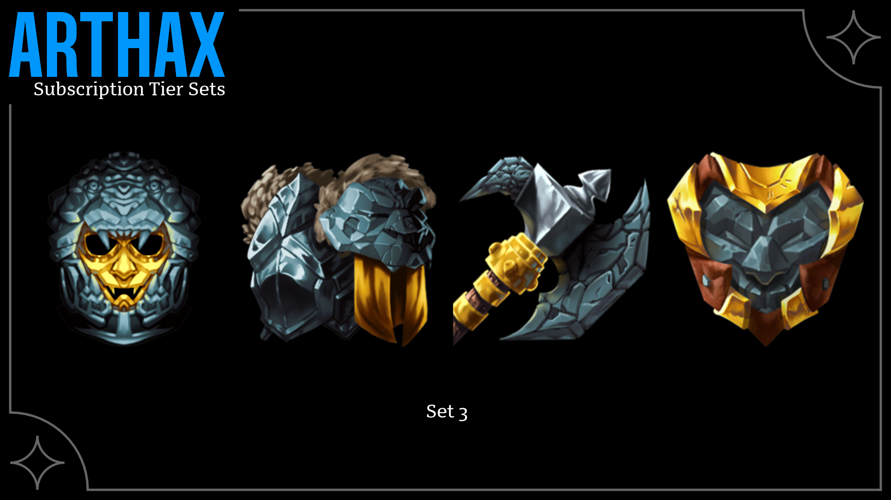
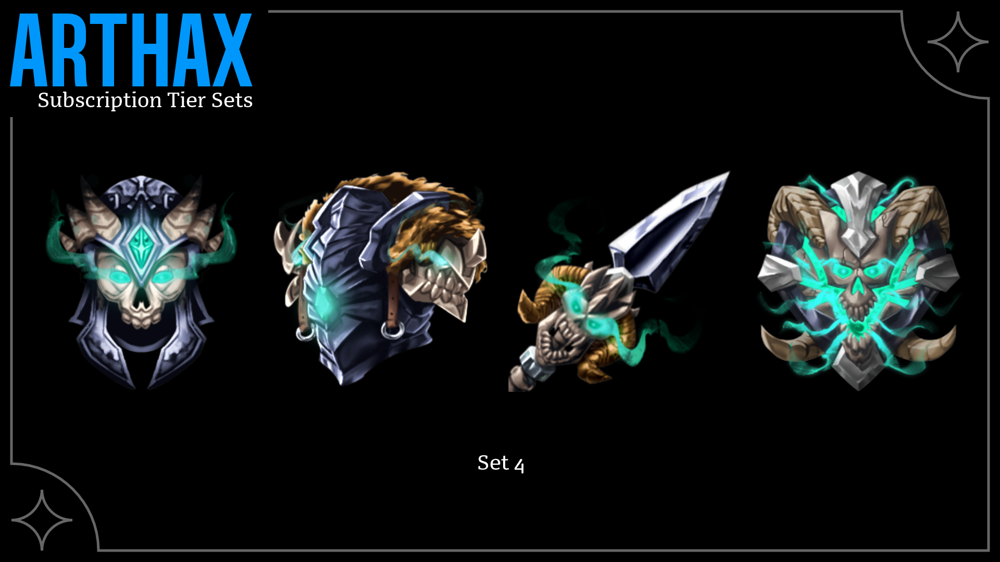
What Are Other Ways To Bring In Revenue?
As part of the design package I offer, I like to provide at least one shirt design utilizing the rules set up within the Brand Guide. Since I have such a large background in screen-printing, I’m able to set up the file personally, to ensure the merch is printed exactly as it needs to be for both longevity and clarity.
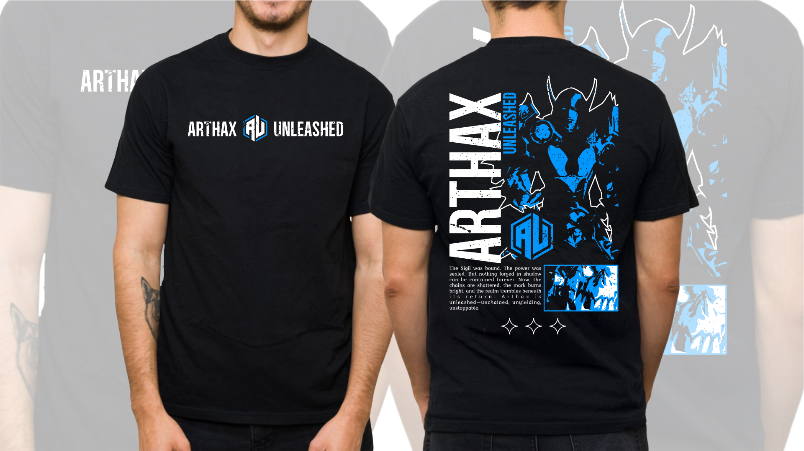
For the T-shirt design, I wanted to keep that dark fantasy vibe front and center. I leaned into a worn, eroded look — something that felt like it was pulled from the pages of a forgotten manuscript. The design has a rough, textured style, almost like it’s been weathered over time. The goal was to create something that felt mysterious and powerful, yet still wearable and visually striking.

What’s Next